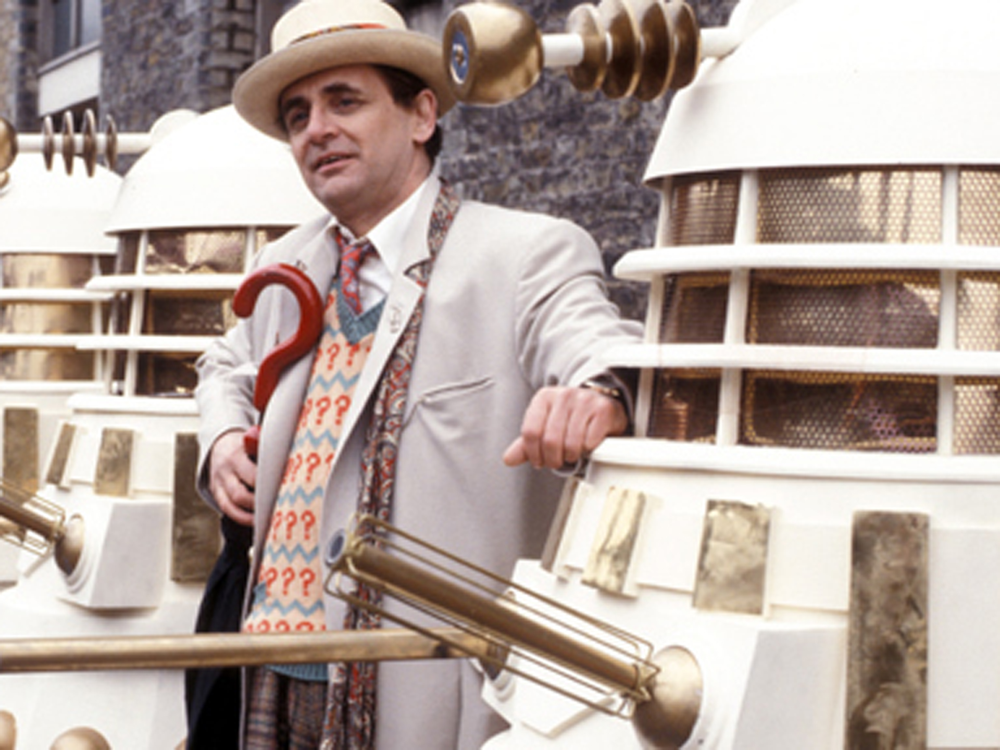

Portrayed by Sylvester McCoy
|  |
In his first series, the Seventh Doctor started out as a comical character, engaging in dundrearyisms ("Time and tide melt the snowman," or when partner Mel is kidnapped "A bird in the hand keeps the Doctor away"), playing the spoons, and making pratfalls, but later started to develop a darker nature and raised the profound question of who the Doctor actually is. The Seventh Doctor era is noted for the cancellation of Doctor Who after 26 years. It is also noted for the Virgin New Adventures, a range of original novels published from 1992 to 1997, taking the series beyond the television serials. In 1990, readers of Doctor Who Magazine voted McCoy's Doctor "Best Doctor", over perennial favourite Tom Baker. The Seventh Doctor's final appearance on television was in the 1996 Doctor Who television movie, where he regenerated into the Eighth Doctor, played by Paul McGann. A sketch of him is later seen in John Smith's A Journal of Impossible Things in the new series 2007 episode "Human Nature". Brief holographic clips of the Seventh Doctor appear in "The Next Doctor" and "The Eleventh Hour". |